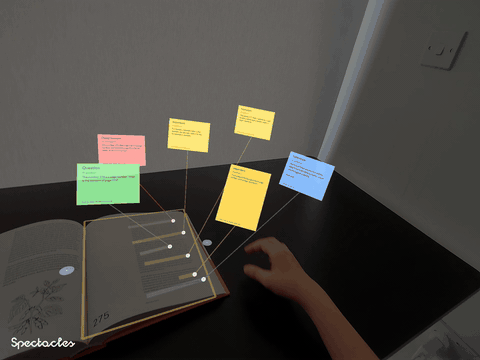
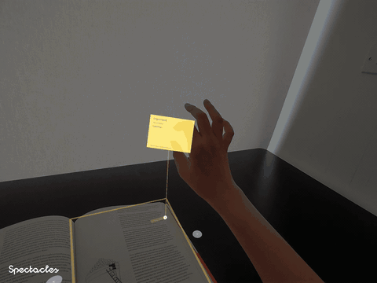
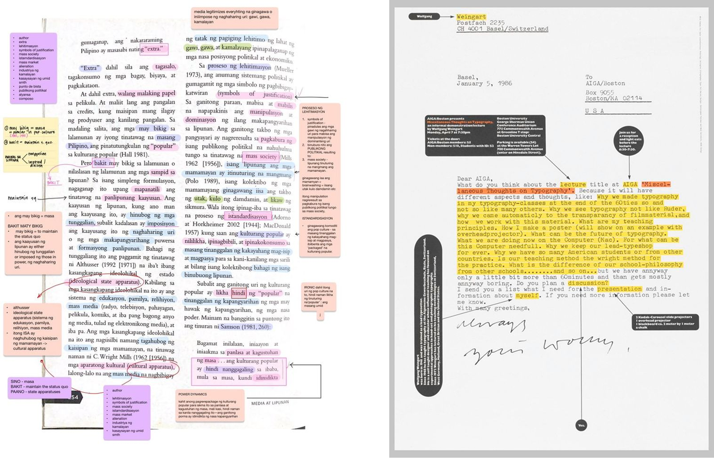
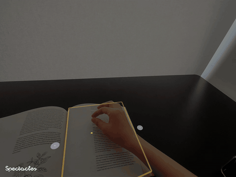
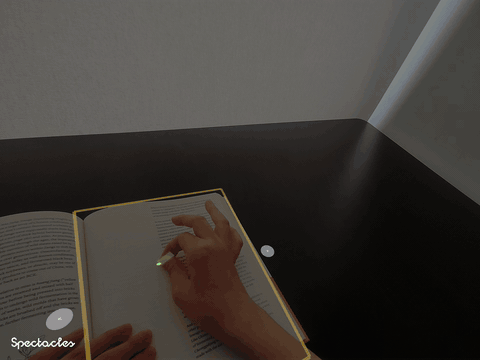

1. Calibrate a physical page
The user pinches the four corners of a page to lock the AR layer onto the paper. After calibration, the system runs OCR to capture page-level context.



SemanticHighlight is a Spectacles lens that lets users calibrate a physical page, create AR highlights with hand gestures, and pull out floating AI-powered post-it notes. Each colour represents a reading intent — Important, Question, Reference, or Disagreement — and Gemini responds accordingly using live camera OCR and page-level context.
I have always loved stationery, notebooks, journaling, and the small rituals of recording thoughts while reading. Highlighting, underlining, and placing post-its feel personal and immediate — they help me capture the exact moment when something matters.

At the same time, the way we learn has changed. AI has become a natural part of how we summarise, question, connect, and reflect on information. But physical reading is still largely disconnected from that intelligence.
When I highlight something in a book and want to ask AI about it, I usually have to interrupt the reading flow: open another device, type the passage manually, take a photo, or move the thought into a separate app. The moment of attention happens on the page, but the conversation with AI happens somewhere else.
SemanticHighlight started from this gap.
“ What if the act of highlighting itself could become the input to AI? ”
Instead of replacing paper reading with a screen, SemanticHighlight keeps the physical page at the centre and adds an editable AR annotation layer on top of it. When the user creates an AR highlight, the system understands the selected passage, the page context, and the user's reading intent. The highlight can then expand into a floating post-it note that summarises, questions, references, or critiques the passage.
The goal is to turn moments of attention into contextual learning notes — without breaking the flow of reading.
Highlighting is already a reader's way of saying, "this matters."
If an AR highlight can capture the selected passage, surrounding page context, and the user's reading intent, then the highlight can become a lightweight AI input. Instead of asking the user to leave the page and talk to AI somewhere else, the system can respond directly within the reading moment.
Over time, these highlight-to-note interactions could become a personal learning archive: a collection of what the user noticed, questioned, connected, disagreed with, and wanted to remember.
The user pinches the four corners of a page to lock the AR layer onto the paper. After calibration, the system runs OCR to capture page-level context.

Holding a pinch opens a colour palette. Each colour represents a different reading intent

The user pinches and drags across a passage to draw an AR highlight directly over the physical text.
An orb appears at the end of the highlight. The user can pinch and pull it outward to reveal a floating post-it note generated from the highlighted passage, surrounding context, and selected reading intent.
I chose highlight-to-note because highlighting is already a natural signal of attention. When a reader highlights something, they are implicitly saying that the passage is important, confusing, interesting, or worth returning to.
Instead of adding a separate AI button or asking the user to manually copy text into a chat, SemanticHighlight treats the AR highlight itself as the input. The highlight becomes the bridge between the physical page and AI-assisted thinking.
I did not want AI to appear automatically because reading is a focused activity. An instant AI pop-up could feel disruptive.
The orb-and-pull interaction makes the AI feel invited. The user actively pulls meaning out of the highlight, so the response feels spatial, intentional, and under their control.
I designed the colour system as a set of reading intentions, not just a visual palette. Each colour changes how the AI responds, so choosing a colour becomes a small act of reflection.
The prototype combines hand tracking, page calibration, OCR, AI text generation, and spatial UI.
After the user calibrates the page, the system runs OCR to understand the page-level context. When the user creates an AR highlight, the selected region is interpreted together with the surrounding page transcription. Gemini then generates a note based on the highlighted passage, the broader context, and the selected semantic intent.
The interaction is managed through gesture states: holding still opens the colour palette, intentional movement creates a highlight, and pulling an orb reveals the post-it note.
This is an ongoing prototype. The next step is to turn SemanticHighlight from a single-page interaction into a persistent contextual learning system.
Improve OCR accuracy and make the AI response more transparent. Each note should clearly show the highlighted source text, page number or spatial position, the context AI referenced, and whether the content was written by the user or generated by AI.
Turn individual post-its into a structured personal note system. Users could save, edit, organise, and revisit highlights by page, book, topic, or reading intent. Highlight thickness, opacity, and note style could also become customisable.
Connect the prototype with Snap Cloud and a companion app so notes can persist across sessions. Over time, AI could connect related notes, detect repeated themes, summarise reading sessions, and help users build a contextual learning archive from accumulated highlights.
This prototype helped me explore AR not as a replacement for physical media, but as a layer that can make physical experiences more flexible, contextual, and intelligent.
The biggest design challenge was balancing AI assistance with reading focus. AI is powerful, but if it appears too aggressively, it can interrupt the quiet rhythm of reading. The pull-out post-it interaction became a way to keep the user in control while still making AI feel close to the reading moment.
Long term, I see SemanticHighlight as more than an AR reading tool. It could become a way to highlight the physical world itself, turning books, objects, diagrams, and everyday observations into a contextual learning archive.